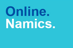
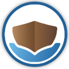
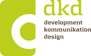
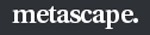

iGude!
The First Rails Girls Workshop in Frankfurt on 15-16th March 2013 was awesome! Girls (and Boys) you were great!
Thank you all for coming and diving with us into the magical world of Ruby on Rails.
We are looking forward to meeting you again!
First Follow-Up Meeting: 15th of May 2013. (see below)
Want to get in touch with us and keep informed about future events? Contact us here.
You can learn prototyping, coding and designing your web ideas with the help from our coaches.
We introduce you to web coding in general and ruby on rails as one of the open-source web developing frameworks.
Interested in Rails Girls Frankfurt? We are the local branch of the global non-profit volunteer comunity Rails Girls. Get informed about what we do: Join our Mailinglist and Forum.
Want to help? More awesome Ruby on Rails Coaches are always welcome. If you want, join the team!
Email us.
Thanks to all attendees!We hope you enjoyed it as much as we did, and,we hope you keep on coding, and we hope you will join in on future events A first Follow-up Meeting is happening on 15th of May. More workshops will most likely happen. But we do not know when yet. |
How much does the participation at Rails Girls workshops cost? Nothing, it's free! You just need to be excited!
Who is this aimed for? Women of any age with basic knowledge of working with a computer. We’ve had people of all ages taking part. Most of the speeches are given in english, but small group work is done in german. Please bring your laptop.
Can men attend? Yes, but you need to be accompanied by an interested lady. Also, girls are given a priority.
I know how to program - How can I help? We’re also looking for people to be coaches. We’ll have a two-three hour workshop before the event to walk you through the curriculum. Email us
First Follow-Up Meeting: 15th of May 2013.
Location: Die Zentrale, Berger Straße 175, 60385 Frankfurt;
Die-Zentrale / Coworking
Everybody interessted is wellcome!
Rails Girls Frankfurt a.M. is co-organized with our awesome partners.
Want to help? We're looking for partners & sponsors for the non-profit events! Email us
 Namics Design küsst Technologie.
wimdu travel like a local!
pixoona – the next level of communication on pictures!
innoQ offers consulting and development services for challenging projects.
 squeakyvessel The Team Boy Scout, leaving teams better than I joined them.
 dkd Internet Service GmbH Full-Service-Internetagentur für Development, Kommunikation und Design in Frankfurt a. M.
webmagazin Shaping Your Digital Experiences.
meso Unimpressed by technology since 1982.
 metascape Ihre Vision - unser Business.
O'Reilly verlegt hochwertige Fachbücher zu allen Gebieten der IT.
t3n Das führende deutschsprachige Printmedium rund um E-Business, Web-Technologie, -Design und digitale Zukunftsthemen.
 wooga One of the largest social games developers in the world.
wooga One of the largest social games developers in the world.
mymuesli Individuelles Lieblingsmüsli von den Frühstücksprofis.